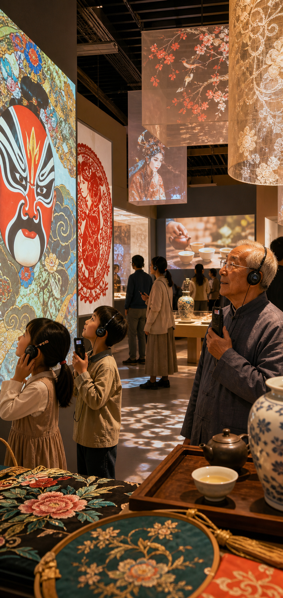
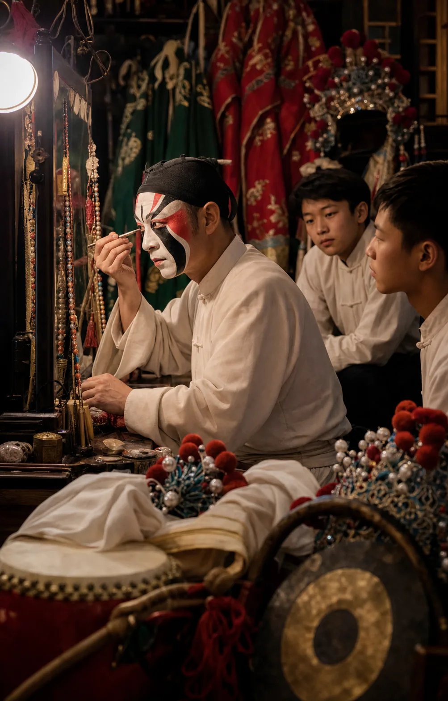
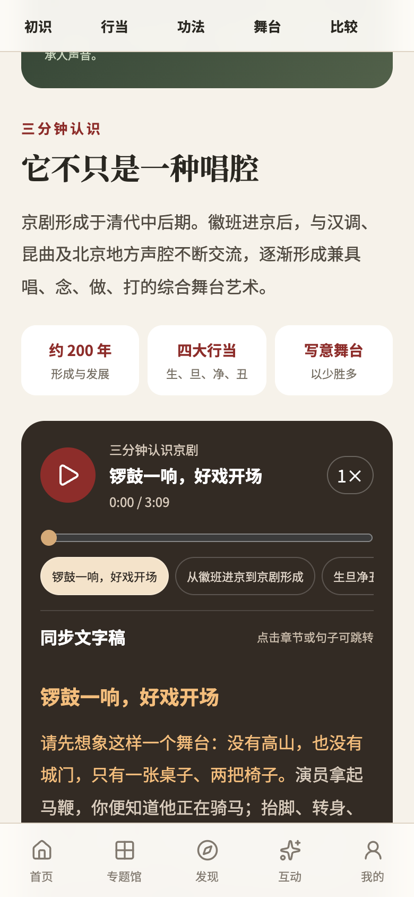
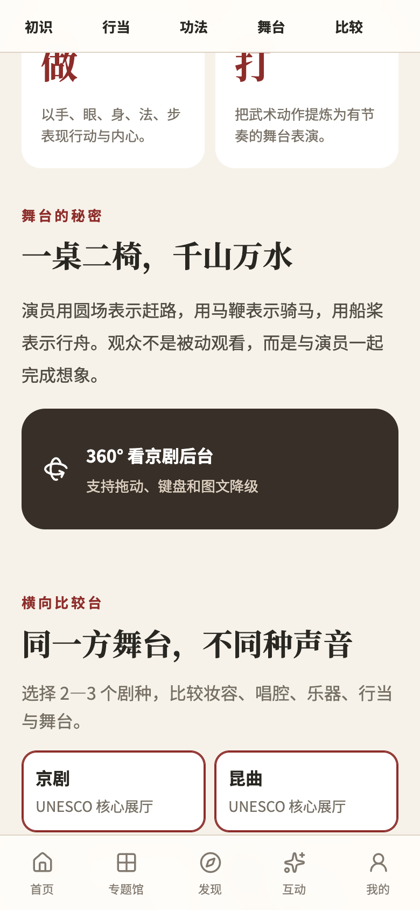
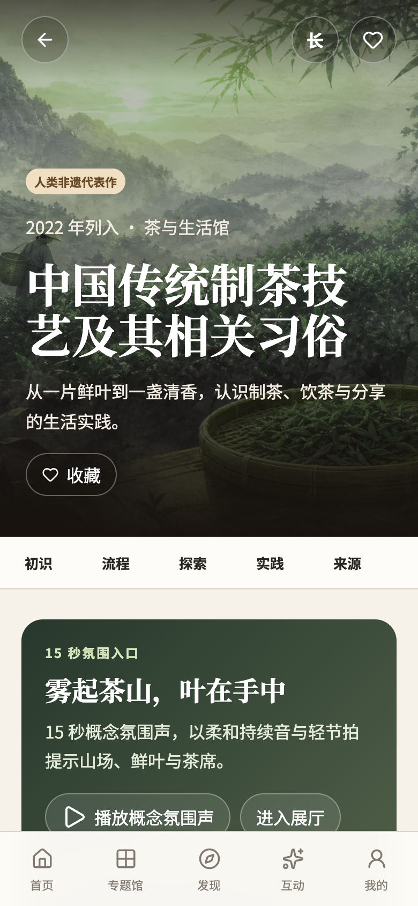

从清单到故事，距离很远
项目、地区、传承人、影像与来源信息分散在不同网站和线下场馆；公众很难形成连续、可信的参观路径。

AI + UNESCO 中国非遗数字博物馆
一项从“需求 → AI 能力 → 移动体验 → 文化价值”展开的数字化传播案例实践。
案例分享 · 路演提案 · 2026
THE FACTS
数据：文化和旅游部 2025 年文化和旅游发展统计公报；中国非物质文化遗产网（截至 2025 年末）。
02 / 12THE PAIN POINT
项目、地区、传承人、影像与来源信息分散在不同网站和线下场馆；公众很难形成连续、可信的参观路径。
技艺、唱腔、仪式和地方实践需要语境、过程与人的讲述；单张图片或一段文字难以传达其价值。
非遗数字资源涉及来源、权利、敏感边界与 AI 标注；不加区分的内容传播可能造成误读与失真。
事实依据：文化和旅游部已发布《非物质文化遗产数字化保护 数字资源采集和著录》11 项系列标准，说明数字资源的规范采集与著录已是明确需求。
03 / 12WHY NOW
中国已形成规模化保护网络：2025 年，中央财政预算安排 4.02 亿元支持国家级非遗代表性项目保护；全国有 2,388 个非遗保护机构、1.49 万家非遗工坊。
数据：国务院关于落实非遗法执法检查报告及审议意见的报告；2025 年文化和旅游发展统计公报。

AI CAPABILITIES
LLM 用于资料整理、受控改写、字幕和翻译草稿；所有事实输出仍需来源与人工复核。
TTS 支持导览；图像生成只作概念示意；OCR/视觉识别可用于学习与展签辅助。
基于审核知识库的问答、个性化参观路径和互动任务，属于下一阶段能力，不在当前版本承诺实时开放。
当前已实现：审核后中文合成语音、AI 概念全景标识与内容 Schema 校验；其他能力列为扩展方向。
05 / 20CASE WORKFLOW · 京剧
来源、年份、行当、唱念做打、权利与敏感边界。
适龄讲解、字幕、导览脚本、概念图与语音草稿。
事实、措辞、版权、社区意见及 AI 标识逐项确认。
字段级来源、版本记录、素材台账和用户反馈闭环。
THE ANSWER
从戏曲、茶、节庆、手工艺、武术等熟悉的动机进入文化现场。
声音、工序、时间轴、比较与全景，让内容拥有最合适的叙事方式。
三分钟导览、任务、学习卡与收藏足迹，建立可持续的参观关系。
UNESCO：截至 2026 年初，中国有 45 个项目列入名录、名册（代表作 40、急需保护 3、优秀保护实践 2）。
07 / 20PRODUCT EXPERIENCE
每一个核心事实可回溯来源；UNESCO 核心项目、对照展项与知识节点清晰分层；AI 合成内容明确标识。
06 / 12
LIVE DEMO · 01
把专业知识转译为可听、可读、可跟随的三分钟参观路径。
支持阅读、点击跳转与进度控制；合成语音、来源和权利信息明确披露。
AI 用于辅助讲解；真人录音、历史资料与 AI 生成内容保持清晰区分。
LIVE DEMO · 02
通过 WebGL 球面全景、热点讲解和移动端陀螺仪，理解戏曲表演背后的舞台空间。
AI 概念全景明确标识，不冒充历史影像或真实档案。
全景体验同时保留等价图文降级，降低设备与无障碍门槛。


LIVE DEMO · 03
以采茶、制茶、泡茶、茶礼与器物为线索，呈现一项 UNESCO 项目的完整文化语境。
地方实践可横向比较，但始终明确其与 UNESCO 核心项目的关系。
45 项清单支持搜索与名录筛选，形成从一次体验到系统探索的路径。
PROTECTION & COMMUNICATION
由文化和旅游部主管，提供政策、名录、传承人、地图、展览及资讯，是重要的权威信息基础设施。
自 2015 年实施以来，非遗传承人群研修研习培训计划已完成“十三五”10 万人次培训目标。
以线上展览、高清馆藏、故事与虚拟游览扩大国际触达，适合文化展示与机构内容分发。
来源：中国非物质文化遗产网“关于我们”与首页；Google Arts & Culture “Art of Chinese Crafts”。
10 / 18POSITIONING
适合政策发布、名录检索、资料查询与行业信息汇聚。
适合机构级线上展览、数字馆藏和一次主题性深度浏览。
聚焦 45 个 UNESCO 中国项目；将可信资料转译为三分钟导览、互动理解、比较与可持续学习路径。
SCALING RESPONSIBLY
做法：建立资产台账、授权范围与到期管理；敏感内容分级；取得社区与权利人的事先、知情、持续同意。
做法：Schema 校验 + 字段级来源 + 专家/机构复核 + 版本记录；争议内容呈现多种有来源观点。
做法：AI 只做检索、草稿、转写和辅助制作；禁止未经审核的事实生成与声音仿冒；所有 AI 内容显著标识。
原则依据：UNESCO 强调社区应在保护中发挥主体作用，相关使用应建立在自由、事先、持续且知情的同意基础上。
12 / 18AUDIENCE & SCENARIOS
碎片化浏览、沉浸体验、节令任务与个人收藏，建立日常文化连接。
可信资料、结构化知识、课堂任务和研学延伸，降低备课与学习门槛。
专题馆共建、数字展厅、线下导流与公共文化服务的数字化延伸。
BUSINESS MODEL CANVAS
官方非遗机构 · 博物馆/文化馆 · 院校 · 传承人及社区 · 文旅单位 · 公益基金与品牌 CSR
内容研究审核、精品展厅制作、授权与 AI 披露、教育文旅运营、产品迭代
收藏与学习卡；机构共建与年度运营；社区授权、署名、反馈及收益回流
权威数据与授权资产、策展与技术团队、可复用互动组件、专家合作网络
可信来源，沉浸体验，
可参与的学习路径。
官网与社交传播、学校课程、场馆二维码、文旅平台、城市与节令专题合作
C 端公众/亲子/学生；B 端场馆、学校、文旅单位；G 端文化与教育主管部门
数字展厅共建与运维、教育课程包、文旅内容合作、授权数字文创、公益资助
内容研究与专家审核 · 媒体授权及制作 · 产品研发与云资源 · 无障碍测试 · 渠道运营 · 合规与版权管理
GO-TO-MARKET
春节、端午、茶事与戏曲片段，形成可分享、可进入的轻入口。
用独特体验延长停留，用学习卡、收藏和足迹沉淀个人关系。
将数字体验带回课堂、展厅与旅行场景，形成持续内容供给和合作网络。
ROADMAP
45 项数据、9 个专题入口；京剧与茶文化旗舰展厅已上线。
太极拳：多视角动作播放器与可访问的动作分解。
中国剪纸：手工艺通用组件与纹理、工序体验。
节庆时间轴与周期运营；补齐 45 个基础展厅。
完成五个旗舰专题馆，并建立正式发布质量审查。
PARTNERSHIP ASK
与场馆、专家、传承人及社区共建可靠、可传播、尊重文化边界的展厅内容。
在学校、研学、公共文化空间与文旅场景中验证真实的学习与参观价值。
支持旗舰内容制作、无障碍能力、数字化互动与可持续的运营体系建设。
THANK YOU
非遗随身馆 · UNESCO 中国非遗数字博物馆
15 / 15